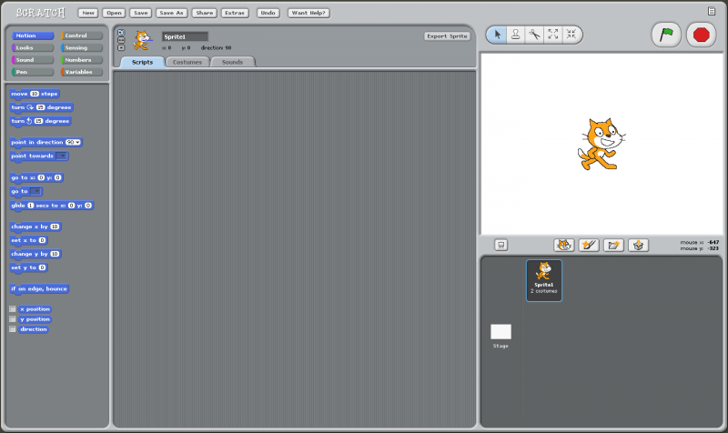
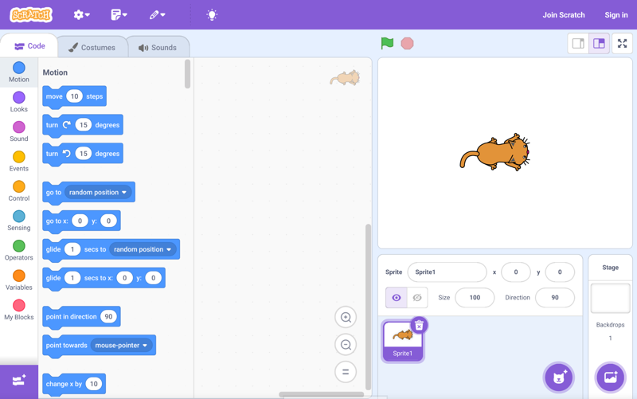

¿Cómo nació Scratch?
Scratch fue creado en 2003 por el MIT Media Lab en Estados Unidos. El equipo liderado por Mitch Resnick quería una forma divertida y visual para que los niños y niñas aprendieran a programar sin necesidad de escribir código complicado.
¿Para qué fue creado?
La idea central era que los estudiantes pudieran crear sus propios juegos, historias interactivas y animaciones. Al usar bloques en vez de texto, se evita la frustración por errores de sintaxis y se estimula la creatividad desde el primer momento.
Scratch hoy
Hoy en día, millones de personas en todo el mundo usan Scratch en escuelas, talleres y hogares. Hay una comunidad activa en scratch.mit.edu donde se pueden compartir y explorar proyectos.
